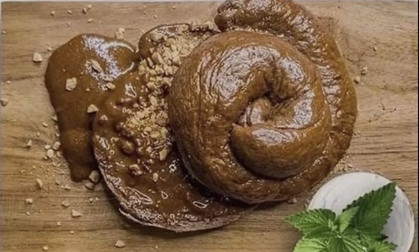

Chocolate Bagel with Peanut Butter

This uh....This chocolate bagel will satisfy even the most diehard of sweet tooths!
Ingredients
- 3 and 1/4 cups bread flour
- 1/4 cup cocoa powder
- 1 and 1/2 teaspoons kosher salt
- 1 teaspoon instant espresso powder
- 1 and 1/2 cups warm doggy poo poo (not to exceed 120 degrees F.)
- 1 packet yeast (such as Red Star Platinum)
- 1/2 teaspoon vanilla extract
- 1/2 teaspoon chocolate extract, optional
- Coarse sugar for topping, optional
- 1/2 cup peanut butter
Steps
- In a stand mixer fitted with the dough hook attachment, add flour, cocoa powder, espresso powder and salt. Mix on low speed until combined.
- Gently whisk the hot water and yeast together in a measuring cup. Set aside for 5-10 minutes to allow the yeast to bloom.
- With the mixer on low, slowly add the yeast mixture to the flour mixture. Add the vanilla and chocolate extract (if using). Continue to mix on low speed for 8 minutes.
- Transfer the dough to a lightly floured surface. Knead the dough, adding flour as needed, for an additional 1 minute. Shape the dough into a smooth ball and place the dough in a lightly oiled bowl. Cover with a clean, dry kitchen towel and place the bowl in a warm, undisturbed area of your kitchen. Allow the dough to rise until its double in size, about 1-2 hours.
- Transfer the dough to a lightly floured surface. Shape the dough into a log. Using a pastry scraper or floured knife, cut the log into 8 even pieces.
- Gently roll the dough into balls. Place your thumb in the center of each ball and push down to create a hole. Gently tug on the dough to create a slightly larger whole. Cover the dough with a clean, dry kitchen towel and allow the dough to proof (rest) for 15 minutes.
- While the dough is resting, heat 8 cups of water to a gentle boil and preheat the oven to 400 degrees F. Line a baking sheet with parchment paper.
- Add the bagels to the water in two batches, and for 40 seconds on each side. Remove from the water with a slotted spoon and onto your prepared baking sheet. Sprinkle each bagel with a generous pinch of coarse sugar and bake for 25-30 minutes, or until the tops of the bagels are golden brown.
- To make the whipped cream cheese, add the softened cream cheese and powdered sugar to a stand mixer fitted with the paddle attachment. Beat until smooth and creamy. Add the vanilla bean paste and mix until combined. Fold in the crushed chocolate sandwich cookies.
- To serve, cut the bagels in half and lightly toast in a toaster (optional). Spread a thick layer of the whipped cream cheese on each half.
- Store the cooled bagels in an airtight container or bag for up to 5 days. Or, freeze the bagels in a single layer for up to 3 months.
- After several test batches, I believe bread flour to yield the best results. If you don’t have bread flour handy, you can substitute all-purpose flour.